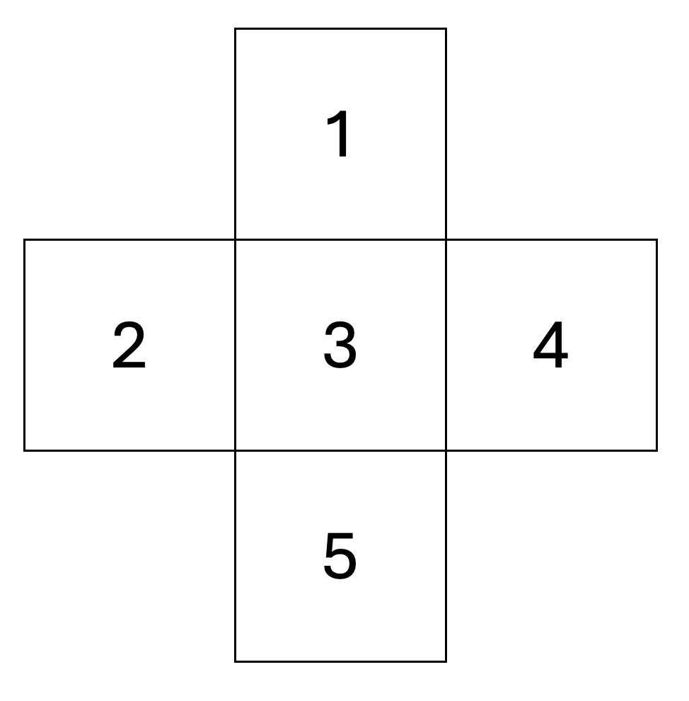

Rl2 - Questions
- What are the common goals between RL and MDP?
- Need to select an action for exploration
- Tranisition probabilities and rewards are known
- Need to propagate back the delayed signal
- Want to find a parametric function for action choice
- What is the difference between RL and MDP setups?
- In RL, we do not know the transition probabilities and reward functions while in MDP we do
- In RL, we always try to find a parametric function for action choice while in MDP we do not
- In RL, need to propagate back the delayed signal while in MDP we do not
- In RL, we do not need to propagate back the delayed signal while in MDP we do

In model-based estimation, for the following setup, if moving UP from state 3 ended up: in state 1 with reward 1, three out of 10 times, in state 1 with reward 0.5, two out of 10 times, in state 2 with reward 0.5, one out of 10 times, in state 4 with reward 2.0, one out of 10 times, and in state 5 with reward -1, three out of 10 times. What is the p’(3, action, reward)?
Given your response to the previous question, what is the expected reward of taking action UP from state 3?
5. In model-free estimation, for the same setup and history, what is the expected reward of taking action UP from state 3?
6. For the same setup, alpha = 0.5 and gamma = 0.5, if in the current iteration you have the following Q-values, what is Q(3, UP) if you ended up in state 1 and got a reward of 1?
| | UP | RIGHT | DONW | LEFT | |--|--|--|--|--| |1| 0 | 0 | 0 | 0 | |2| 1.1 | 0.9 | -0.2 | 0 | |3| 1.2 | 0 | 0 | 0 | |4| 0 | 0 | 0 | 0 | |5| 0 | 0 | 0 | 0 |
- For the same setup, alpha = 0.5 and gamma = 0.5, if in the current iteration you have the following Q-values, what is Q(3, UP) if you ended up in state 2 and got a reward of 0.5?
| | UP | RIGHT | DONW | LEFT | |--|--|--|--|--| |1| 0 | 0 | 0 | 0 | |2| 1.1 | 0.9 | -0.2 | 0 | |3| 1.2 | 0 | 0 | 0 | |4| 0 | 0 | 0 | 0 | |5| 0 | 0 | 0 | 0 |
- For the same setup, alpha = 1 and gamma = 0.5, if in the current iteration you have the following Q-values, what is Q(3, UP) if you ended up in state 2 and got a reward of 0.5?
| | UP | RIGHT | DONW | LEFT | |--|--|--|--|--| |1| 0 | 0 | 0 | 0 | |2| 1.1 | 0.9 | -0.2 | 0 | |3| 1.2 | 0 | 0 | 0 | |4| 0 | 0 | 0 | 0 | |5| 0 | 0 | 0 | 0 |
For the same setup, alpha = 0 and gamma = 0.5, if in the current iteration you have the following Q-values, what is Q(3, UP) if you ended up in state 2 and got a reward of 0.8?
Which of the following is true about the alpha hyperparameter in the Q-value iteration formula?
- If alpha is closer to zero, we care about the past samples more
- If alpha is closer to zero, we care about new samples more
- If alpha is closer to one, we care about the past samples more
- If alpha is closer to one, we care about new samples more
- Why would classical Q-learning be impractical in learning how to play the game of Go?
- State and action space is unknown
- Computational cost of calculating Q-values for all state and action combinations
- The state and action space is too big to explore using this method
- All of the above
- In a deep Q-learning setting, what is different about the Q-value?
- Q-value is no longer represented as a table
- Q-value is now represented parametrically as a function
- No hyperparameters are used for deep Q-learning
- All of the above
- Which of the following formulas is used for finding the Q-value in deep Q-learning?
- \(L = (R(s, a) + \gamma \max_{a'} Q(s', a') + Q(s, a))^2\)
- \(L = (R(s, a) + \gamma \max_{a'} Q(s', a') + Q(s, a))\)
- \(L = (R(s, a) + \gamma \max_{a'} Q(s', a') - Q(s, a))^2\)
- \(L = (R(s, a) + \gamma \max_{a'} Q(s', a') - Q(s, a))\)
- Match the following issues that can arise in a deep Q-learning setting to the respective solution.
| issue | solution | |--|--| | Short-term actions are related | train another Q-value that is updated slowly | | Moving target problem | use Monte-Carlo| | Hard to perfect local behavior | sample actions to take into account randomly from a continuous set |
- Short-term actions are related -> sample actions to take into account randomly from a continuous set
- Moving target problem -> train another Q-value that is updated slowly
- Hard to perfect local behavior -> use Monte-Carlo